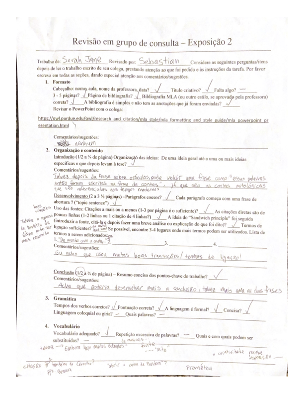
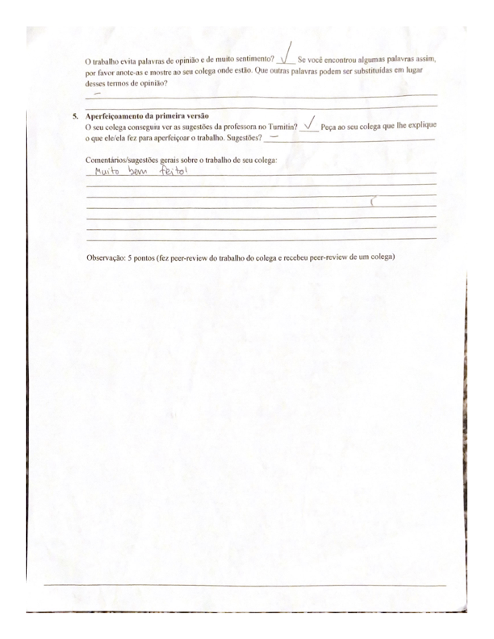

Índice
Leia aqui ou clique aqui para poder baixar
Ele
Com os braços fortes, ele segura a roupa lavada. Com as mãos macias que têm veias visíveis, ele dobra as roupas. Mas os braços e as mãos não são apenas partes físicas de um corpo. São braços de consolo e mãos gentis, que seguram não só a roupa, mas a esposa também. São veículos para o serviço do próximo, sempre fazendo o possível para ajudar alguém. São partes de um todo que é lindo tanto por fora como por dentro.
Ele não se acha bonito, mas isso é porque não consegue ver o jeito que o seu rosto ilumina como o sol quando fala de suas paixões. Os seus olhos começam a cintilar e com sua cor castanha clara, vem à mente lembranças da época do Natal. Até dá para ouvir a madeira na lareira se queimando, saborear o chocolate quente na caneca e sentir como se estivesse sentado no sofá com um cobertor gigante, olhando a queda da neve. A voz é suave e reconfortante, deixando o sentimento de que tudo vai ficar bem.
Quando ele sorri, todas as características de seu rosto amaciam e a felicidade é contagiosa. Não tem como olhar o sorrisão e as covinhas dele sem começar a sorrir também. Mas quando não está sorrindo, as características do rosto são bem definidas e acentuadas. As bochechas ruborizadas, o nariz pontudo e os lábios perfeitamente formados, como um arco numa história de fantasia.
Ao falar com ele, é muito fácil perceber que ele se importa com as pessoas. A cada oportunidade, ele pergunta do que os outros precisam e como ele pode ajudar. Ele é perceptivíssimo, sempre observando e analisando as pessoas ao seu redor, para que, quando for preciso, já saiba do que fazer para socorrer. Ele não se acha bonito, mas todo mundo que o conhece sabe que é.
Leia aqui ou clique aqui para poder baixar
Ele
Com os braços fortes, ele segura a roupa lavada. Com as mãos macias que têm veias visíveis, ele dobra as roupas. Mas os braços e as mãos não são apenas partes físicas de um corpo; são braços de consolo e mãos gentis, que seguram não só a roupa, mas a esposa também. São veículos para o serviço do próximo, sempre fazendo o possível para ajudar alguém. São partes de um todo que é lindo tanto por fora como por dentro.
Ele não se acha bonito, mas isso é porque não consegue ver o jeito que o seu rosto ilumina como o sol quando fala de suas paixões. Os seus olhos começam a cintilar e sua cor castanha clara traz à mente lembranças da época do Natal. Até dá para ouvir a madeira na lareira se queimando, saborear o chocolate quente na caneca e sentir como se estivesse sentado no sofá com um cobertor gigante, olhando a queda da neve. A voz é suave e reconfortante, deixando o sentimento de que tudo vai ficar bem.
Quando ele sorri, todas as características de seu rosto se amaciam e a felicidade é contagiosa. Não tem como olhar o sorrisão e as covinhas dele sem começar a sorrir também. Mas quando não está sorrindo, as características do rosto são bem definidas e acentuadas, como as bochechas ruborizadas, o nariz pontudo e os lábios perfeitamente formados, como um arco numa história de fantasia.
Ao falar com ele, é muito fácil perceber que ele se importa com as pessoas, pois a cada oportunidade, ele pergunta do que os outros precisam e como ele pode ajudar. Ele é perceptivíssimo, sempre observando e analisando as pessoas ao seu redor, para que, quando for preciso, já saiba o que fazer para socorrer. Ele mal pode esperar para ser pai, e já está animado para brincar com as crianças o dia todo. Ele é o meu marido, e embora eu tenha descrito as características dele, não há palavras para descrever o amor que sinto por ele.
Leia aqui ou clique aqui para poder baixar
Mitologia moderna
De onde vêm os problemas da mortalidade? Por que acontecem desastres naturais? A busca pela compreensão dessas e outras questões leva o ser humano a pensar muito profundamente, e às vezes a criar as respostas que não se encontra. Para o povo da Grécia, essas respostas vinham da mitologia, que “surgiu da curiosidade que os gregos tinham de explicar a origem da vida e os problemas da existência”. Quando precisavam enfrentar adversidades, procuravam a ajuda de oráculos, por meio dos quais acreditavam que poderiam falar com os deuses (Carvalho). Mesmo que não acreditemos nesses deuses, as crenças gregas são relevantes nos dias de hoje porque a mitologia grega ainda influencia muito a sociedade contemporânea na psicologia, na linguagem e nas obras criativas.
Até hoje, o mundo psicológico se refere muito à mitologia grega. Sigmund Freud, um neurologista da Áustria, foi criador da psicanálise, um “método utilizado para o tratamento de doenças mentais”. Devido às teorias dele, os médicos e as pessoas aflitas pelos transtornos mentais começaram a entender-se melhor, proporcionando-lhes um sistema de tratamento mais adequado (Bezerra). Uma dessas teorias é o narcisismo, que é baseado no mito de Narciso. Narciso foi uma pessoa muito vaidosa, que se amava excessivamente. Ele era “arrogante e orgulhoso” e “ficou apaixonado por sua própria imagem, ao vê-la refletida num lago”. Na lenda, Narciso permaneceu ao lado do lago pela vida inteira, porque não queria parar de olhar-se. Freud ligou a história de Narciso ao amor-próprio exagerado e à vaidade, usando este rótulo para descrever a tendência de colocar-se acima de todos os outros (Diana).
Além de Narciso, Freud também usou o mito de Édipo Rei para analisar o comportamento humano. Nessa tragédia grega, o oráculo de Delfos profetizou que Édipo mataria o seu pai e casar-se-ia com sua mãe. Claramente tentando fugir dessa profecia, ele se prometeu que nunca mais voltaria para Corinto, a cidade onde moravam os seus pais. Ao viajar para encontrar um lar novo, ele conheceu o rei de Tebas, Laio, e o matou depois de uma disputa. Sem que Édipo soubesse, Laio era o seu pai biológico e os pais que ele conhecia o tinham adotado. Ele continuou seu caminho e chegou a Tebas, onde respondeu ao enigma da esfinge, que aterrorizava a cidade e fez com que ela saísse. Cheio de gratidão, o povo de Tebas lhe deu o trono e lhe ofereceu Jocasta, a rainha cujo marido Laio havia sido morto recentemente. Após muitos anos e quatro filhos, Édipo e Jocasta souberam que esta era a mãe dele e que a profecia já tinha se cumprido (Silva, “Mito de Édipo”). Dessa história, Freud criou o conceito do Complexo de Édipo, o que diz que durante uma época da vida, os do sexo masculino desenvolvem “fortes desejos pela mãe”, ou seja, sentimentos incestuosos, e por causa disso, “começa[m] a ver seu pai como rival, ao mesmo tempo que pretende obter seu amor e sua atenção”. Freud acreditava que o pai podia pôr fim a esses sentimentos, porém, ainda tinha a hipótese que na vida adulta, os garotos escolheriam uma mulher semelhante à mãe (“Complexo de Édipo”).
A mitologia grega também continua a influenciar a linguagem social. Existem muitas expressões comuns que têm origem nos mitos da Grécia. Uma delas é “carregar o mundo nas costas”, que deriva da fábula de Atlas, o titã. Os titãs eram os governantes do mundo antes dos deuses do Olimpo, que inclui Zeus, Hades e Poseidon. Contudo, os titãs eram tiranos, então Zeus e seus irmãos deram um golpe e tomaram conta do planeta terra. Depois de um tempo, os titãs queriam “conseguir o poder supremo do mundo” novamente e atacaram o Olimpo. Novamente, foram derrotados por Zeus e os outros deuses, e como punição, Atlas ficou com o castigo de “sustentar o céu para sempre em seus ombros” (Galahad). Na atualidade, dizemos “carregar o mundo nas costas” para descrever alguém que está com um fardo pesado.
Ademais, o conto de Pandora também se situou na linguagem coloquial ao falarmos da “caixa de Pandora”. Essa expressão, que quer dizer criar uma situação complicada ou problemática, tem outras formas, como casa de marimbondo ou vespeiro, mas o significado atrás dela é ainda mais pesado. De acordo com a mitologia grega, Pandora foi a primeira mulher, criada por Hefesto, um dos deuses do Olimpo, para punir a humanidade. Prometeu, conhecido como criador do homem, roubou o fogo dos deuses e o deu para os seres humanos na terra. Zeus se zangou, ordenou a Hefesto que criasse Pandora e tentou o irmão de Prometeu, Epimeteu, com ela. Apesar dos avisos do irmão, Epimeteu a aceitou como esposa. Em sua casa havia uma caixa, cheia de “todos os males existentes”, que jamais deveria ser aberta. Entretanto, Pandora era muito curiosa e não aguentou ficar longe da caixa; abriu-a e saíram os males, inclusive “as doenças, a inveja, o ódio, a vingança, a guerra, os vícios, a necessidade de trabalhar para sobreviver, entre outros” (Silva, “Caixa”). Segundo esse mito, foi assim que o mundo se tornou imperfeito e difícil de suportar, e é por isso que agora usamos a expressão “caixa de Pandora” para notar uma circunstância delicada.
Da mesma forma, os temas e as estruturas das obras criativas frequentemente vêm da mitologia grega. De longe, a estrutura mais famosa é a jornada do herói. Nessa jornada, há um personagem que sente falta de algo, acaba por descobrir um novo mundo, passa por aventuras extraordinárias e consegue encontrar um propósito maior que si mesmo. Essa jornada do herói origina-se na Grécia, mas continua até hoje em várias culturas, porque como diz o mitólogo Joseph Campbell, pode-se concluir que na verdade existe somente um herói arquetípico, cuja vida se replica ao longo do tempo (136). Um exemplo dessa continuação é o filme Guerras nas estrelas, que segue Luke Skywalker. Ele não se sente satisfeito com a vida e acaba se encontrando com a Aliança Rebelde, aprendendo a ser cavaleiro Jedi e derrotando os vilões. Assim se pode ver o ciclo dos heróis, que foi originalmente escrito pelos gregos.
Embora haja muitos exemplos de obras criativas, “Hadestown” (o musical) é um dos mais recentes que foi inspirado pelos gregos. Esse é uma verdadeira adaptação da saga de Orfeu e Eurídice, combinada com a de Hades e Perséfone, “ambientada na Grande Depressão dos anos 1930, combinada a elementos pós-apocalípticos” (Martins). No texto original, Orfeu é poeta e músico que se apaixona por Eurídice, que morre por causa da picada de uma serpente. Ele vai até Hades para implorar que possa Eurídice voltar para o mundo dos vivos, e com a música comovedora, convence o deus do submundo a deixá-la sair, sob a condição de Orfeu não poder olhar para ela até retornarem à luz do sol. Infelizmente, Orfeu não é capaz de cumprir essa condição e perde o seu amor para sempre (Peixoto de Alencar). A história do musical tem poucas diferenças—os personagens são os mesmos, mas com “tons mais atuais e até políticos”, a mensagem fica mais pertinente ao nosso mundo moderno (Martins).
Assim como somos influenciados pela psicologia, pela linguagem e pelas obras criativas, elas são influenciadas pela mitologia grega, ainda mais de dois mil anos depois. As teorias de Freud mudaram os pensamentos de sua época sobre a saúde mental e abriram o caminho para outros tipos de tratamento, o jeito que falamos contém traços das lendas antigas e a criatividade recebe inspiração. É impossível saber o impacto que o que fazemos agora terá no futuro, mas com o exemplo da Grécia, é possível imaginar que será duradouro.
Bibliografia
Bezerra, Juliana. “Sigmund Freud”. Toda Matéria. https://www.todamateria.com.br/sigmund-freud/. Acesso em 12 de outubro de 2023.
Campbell, Joseph, and Bill Moyers. The Power of Myth. Anchor, 1991.
Carvalho, Leandro. “Mitologia grega”. Brasil Escola. https://brasilescola.uol.com.br/historiag/mitologia-grega.htm. Acesso em 12 de outubro de 2023.
“Complexo de Édipo”. Toda Matéria. https://www.todamateria.com.br/complexo-de-edipo/. Acesso em 12 de outubro de 2023.
Diana, Daniela. “O mito de Narciso”. TodaMatéria. https://www.todamateria.com.br/o-mito-de-narciso/. Acesso em 16 de outubro de 2023.
Galahad, L.C. “Atlas, o titã que sustenta o céu nos ombros”. Mitologia Grega Br. https://mitologiagrega.net.br/atlas-tita-que-sustenta-mundo-nos-ombros/. Acesso em 16 de outubro de 2023.
Martins, Cláudio. “Conheça ‘Hadestown’, campeão de indicações ao Tony Awards inspirado no mito de Orfeu”. A Broadway é Aqui! https://abroadwayeaqui.com.br/2019/05/14/conheca-hadestown-campeao-de-indicacoes-ao-tony-awards-inspirado-no-mito-de-orfeu/. Acesso em 16 de outubro de 2023.
Peixoto de Alencar, Valéria. “Orfeu e Eurídice: Mitos inspiram a arte”. UOL Educação. https://educacao.uol.com.br/disciplinas/artes/orfeu-e-euridice-mitos-inspiram-a-arte.htm. Acesso em 16 de outubro de 2023.
Silva, Daniel Neves. "Caixa de Pandora". Brasil Escola. https://brasilescola.uol.com.br/mitologia/a-caixa-pandora.htm. Acesso em 17 de outubro de 2023.
---. “Mito de Édipo: O destino de Édipo Rei.” História Do Mundo. https://www.historiadomundo.com.br/grega/mito-de-edipo.htm. Acesso em 16 de outubro de 2023.
Leia aqui ou clique aqui para poder baixar
 